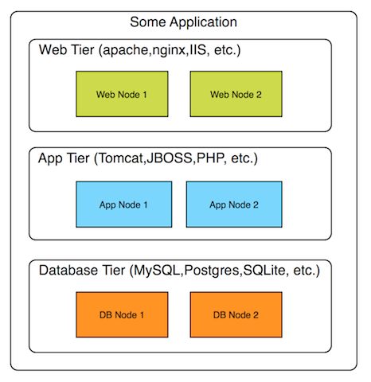
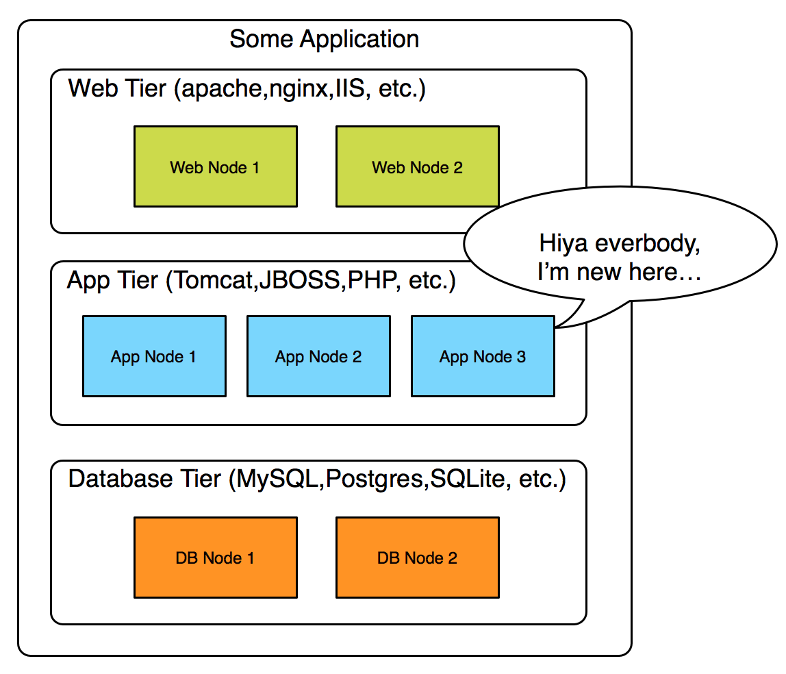
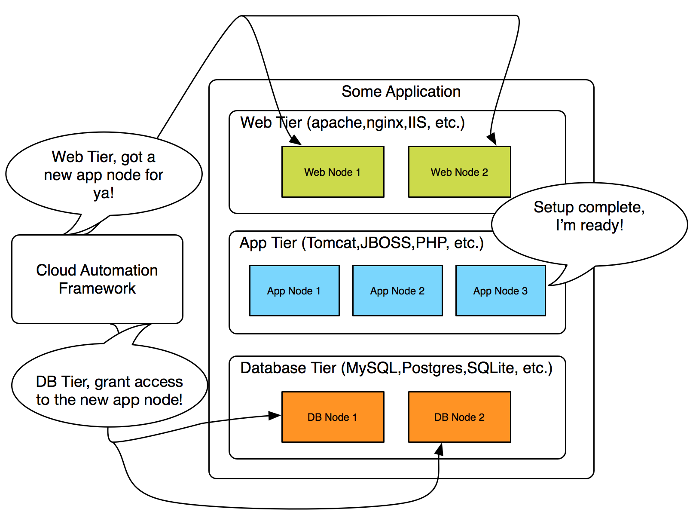
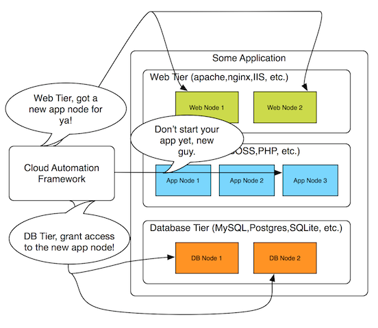
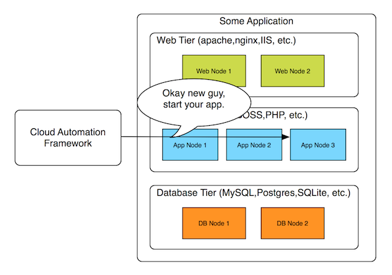

Cloud Automation - General Form
Wed 16 July 2014 by Greg MoselleAutomate application deployment using the cloud! Sure, let's do that, right after we figure out if the application fits a cloud deployment model and see how well the application is known.
The goal when planning for application automation in the cloud is to be able to push the "go button" and have the application stack be completely deployed without the involvement of a human being.
Additionally, should a failure occur, the application stack should be able to be restored to full strength without human intervention.
A tall order, no doubt. How to get there from here:
Getting Started
The first step in planning for deployment of a cloud application is to map out the following cases:
What are the steps involved in achieving a running application?
Starting from building blocks like software build artifacts and a base image, for example, how does the application reach a functional state?
If part of the steps involves the database team and security teams, include them in this discussion.
Map the steps out serially as though the goal was to create a tutorial for deploying the application. Don't try to automate yet, it will only impede later steps.
Done with that part? Don't worry if the steps have to be revised, that's part of the process.
Draw the finished application architecture.
This is usually the first step taken by application designers, and that's fine. Try not to group things together that are not alike. For example, separate into tiers the web, application, and database elements, as appropriate.
Break it and map the steps to fix the problem.
Now that the application architecture is created. Pick an essential element such as a application node and walk through the steps that need to happen in order to restore the application stack to full strength if that node breaks.
I'll shortly argue that there are a general set of steps involved in this process, but this exercise is vital to the task of automating the overall application.
Scale it and map the steps required to accommodate that change.
Scaling is often another expectation for applications deployed to the cloud. A similar process to handling breakage can be used in determining the steps required to scale the application at each point where scaling is required.
We'll walk through just such a case next.
Applications - A General Form
Many application architectures can be reasonably approximated by three tiers: a web, application, and database tier.

As with any approximation, there is some loss of granularity, for example I did not include a load balancer in this diagram, as that function can and often is performed at the web tier by software such as nginx or apache.
A very large amount of applications can be approximated by this diagram. Tomcat, many LAMP applications, and others require these elements.
Change: A Scaling Event
Following the steps listed above, let us follow the case of a scaling event that results in the addition of another application node.

If the process to determine the need to scale was automated, the framework/utility in which the application was deployed needs to be able to handle such events.
In any case, once the application node has joined the application tier, what are the steps that need to happen to handle this change?
Generally, scaling should be used to "right size" the pool of resources. Scaling results in the addition of extra nodes to meet demand or the reduction in the number of nodes in response to decreased demand.
In this case, an application node has joined the application tier. Dependent services running in the web and database tier are affected by this change. For example, nodes in the web tier might need to know about this change in order to start directing traffic to the newly christened application node.
The database nodes in the database tier need to know to allow for incoming traffic from the new application node.
The new application node itself also requires information if it is to be a fully functional member of the application stack. It needs to know how to reach and authenticate to the database nodes, and to allow for traffic from the web nodes.
To make things even more rigorous, the configuration steps taken on the web and database tiers should be taken after the configuration of the application node is complete, but more on that later.

The steps to notify the web and database tiers should happen almost simultaneously. The proper ordering of automation events includes the complete configuration but not the starting of the application node's application at this stage.

Once the dependent services are aware of and have made accommodations for the newly joined application node, the cloud automation framework should trigger the starting of the application on the new application node.

Next Steps
In this example we handled a generic scaling case involving the addition of a new node to an application tier.
After presenting the process for automating an example application in this way, the question I most often receive is: That's nice for your application, will it work for mine?
This question is akin to asking if addition will work on adding your numbers like it did on mine.
The answer is, wait for it, it depends. The short answer is it depends on how well you know the application being automated.
To find out whether or not your application can be automated in this way, start with a couple of assumptions:
- The cloud automation framework shown in the diagram exists. Hint: it does.
- The framework passes information to nodes that need it, when they need it.
- The information is passed securely, and is configurable.
Next, ask these questions:
- How well do you know the application being automated? This means, among
other things, knowing:
- Where are the configuration files for the application?
- What are the steps involved in starting up the application?
- Are there any dependencies for the application such as databases and load balancers?
- If dependencies exist, how can they be notified of failures or scaling?
- What steps need to happen in the event of failure?
- What steps need to happen in the event of scaling?
Wrapping Up
Automating infrastructure changes via scaling is relatively trivial. The interesting part comes in the how applications housed upon said infrastructure handle such events.
I hope this post has provided some insight into the consideration required for automating a cloud application.
Server Lifetime as SDLC Metric
Server Lifetime as SDLC Metric. Or I like you, that's why I'm going to kill you first.
read moreMeasuring DevOps Adoption
Driving DevOps: The Metrics of Configuration Management
read moreCloud Management Value Propositions
Cloud Value Propositions
read moreCloudy Apps: Part 2
Moving applications to the cloud - Part 2
read more